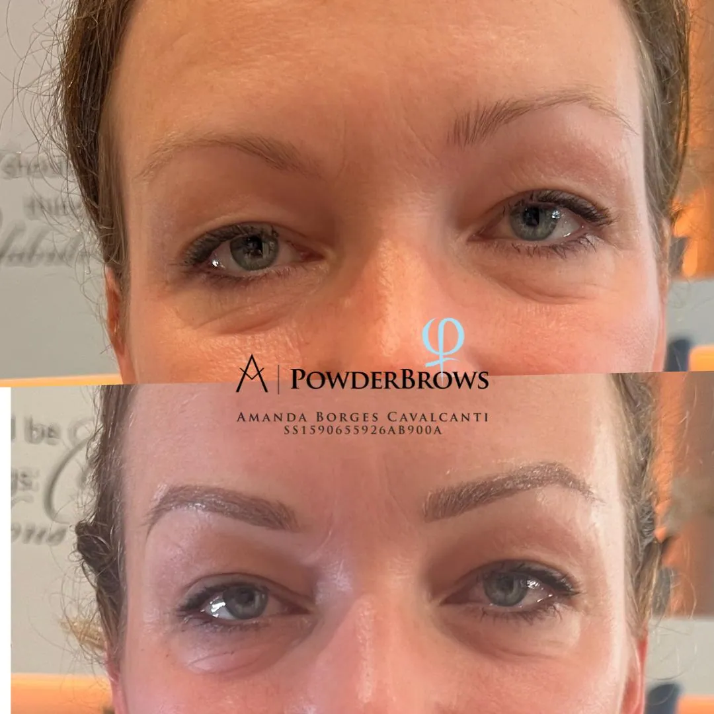
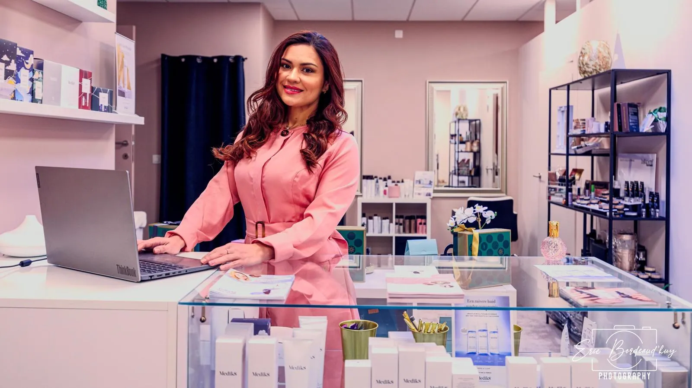
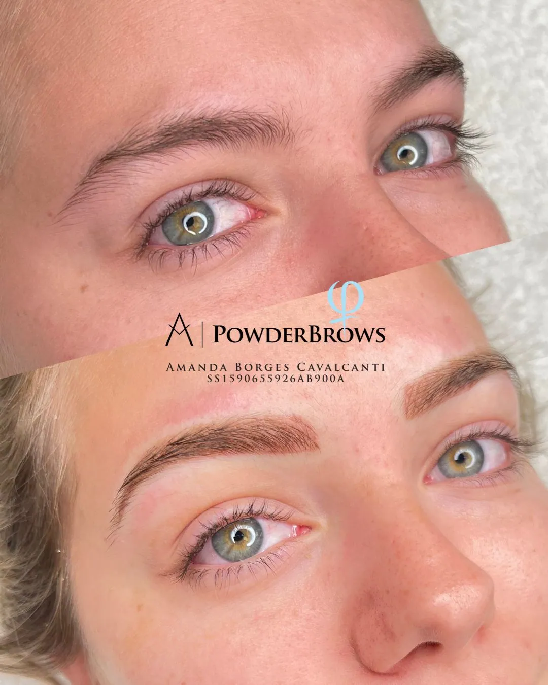
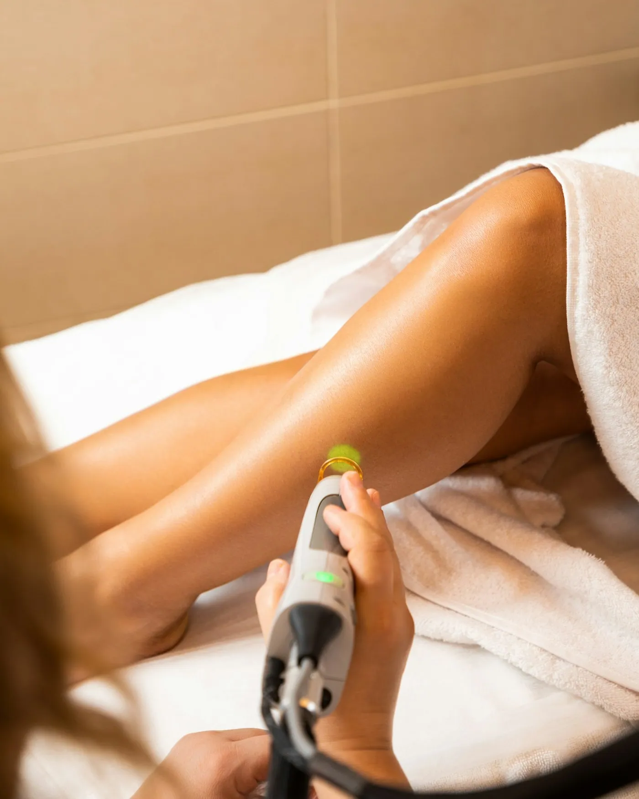
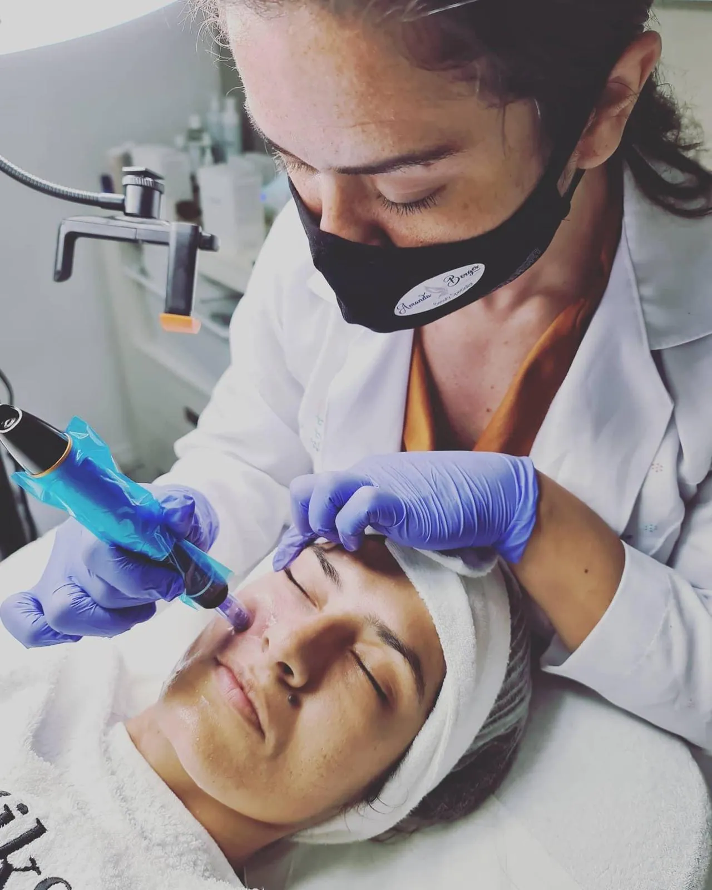
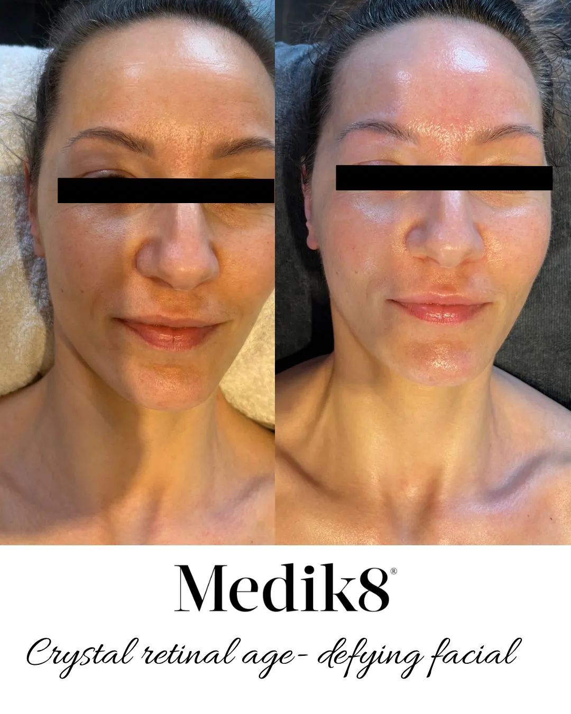
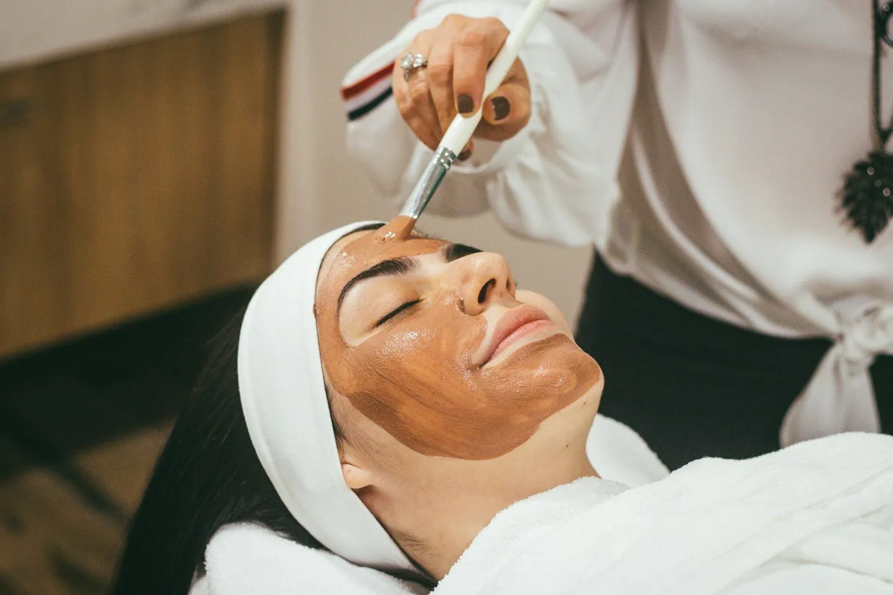
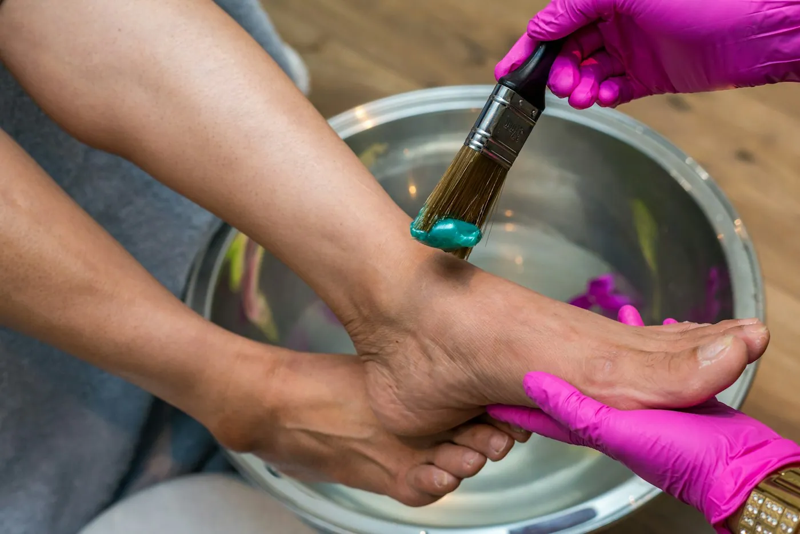
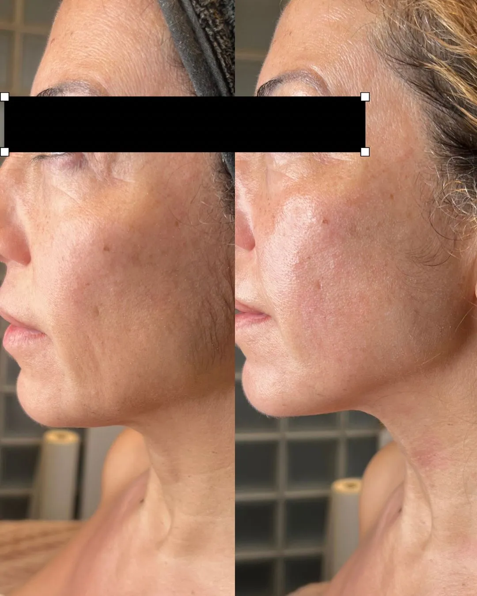
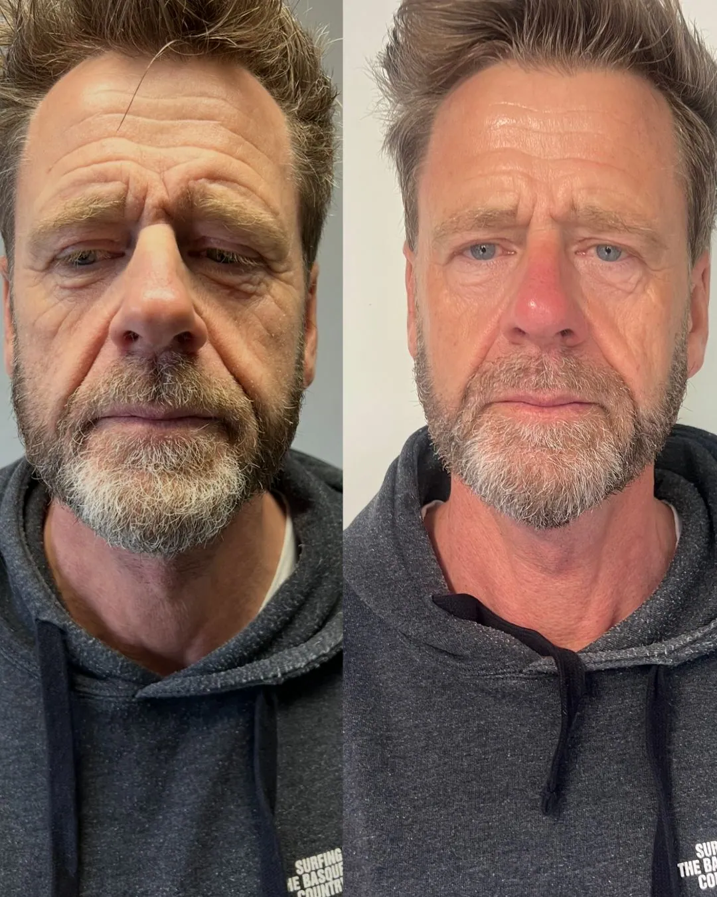

BrowsPermanente make-up
Wenkbrauwen die er 's morgens al staan. Natuurlijk van vorm, afgestemd op je gezicht.
- Powderbrows
- Microblading


Aan de Brechtsebaan in Brasschaat helpt Amanda je met pigment, een doffe of onrustige huid, ongewenste haartjes en wenkbrauwen die je elke ochtend moet bijtekenen. Ze bekijkt eerst je huid, legt rustig uit wat je kan verwachten en begint pas als jij er helemaal achter staat.
Van een eerste wenkbrauwcorrectie tot een volledige reeks laser. Twijfel je wat het beste past? Vraag het haar gewoon.

BrowsWenkbrauwen die er 's morgens al staan. Natuurlijk van vorm, afgestemd op je gezicht.

OntharenDefinitief af van scheren en harsen. Amanda werkt met haar eigen lasertoestel, in een reeks behandelingen.

LiftingHuidversteviging zonder naald of mes, voor gezicht en lichaam. Ideaal als je huid wat minder strak wordt.

HuidGerichte behandelingen voor pigment, fijne lijntjes en een doffe teint. Je huid krijgt weer wat glans.

VerzorgingEen uur helemaal voor jezelf. Reinigen, verzorgen en tot rust komen, met een huid die straalt.

VoetenZachte voeten zonder eelt, met een behandeling die je voelt maar die nergens pijn doet.
Een greep uit het werk dat Amanda deelt op haar Google-profiel.


Elk resultaat is persoonlijk. Amanda zegt je vooraf eerlijk wat haalbaar is voor jouw huid.
Amanda is al jaren gespecialiseerd in permanente make-up en blijft zich bijscholen. Daarnaast kocht ze haar eigen lasertoestel, zodat ze ook laserontharing en huidverbetering zelf in handen heeft.
Wie bij haar binnenstapt, merkt vooral de rust. De praktijk is proper en sfeervol, ze legt alles goed uit en neemt de tijd. Wie één keer komt voor een pedicure of brows, plant vaak meteen de volgende behandeling.
Een perfecte score uit 31 reviews op Google.
Lees ze allemaal →“Amanda heeft de vorm en uitstraling heel natuurlijk gemaakt, precies zoals ik wilde. Het resultaat is prachtig.”
“Ik heb nog nooit zo'n zachte behandeling gehad; ze maakte mijn voeten zo soepel en verwijderde voor het eerst mijn eelt volledig.”
“Ik was direct op mijn gemak, ze legt alles goed uit. Heb al verschillende behandelingen door haar laten doen en van allemaal zeer tevreden!”
DIEen woordje uitleg van Stijn
Ik maakte deze demo voor jullie om te tonen wat er kan. Na een kort gesprek maak ik er iets veel persoonlijkers van, helemaal naar jullie wens.
Vrijblijvend. Ik kom langs of we bellen.
Op maat, op jullie eigen domein.
Geen voorschot. Jullie betalen pas als alles klaar is.
Hosting, domeinnaam en kleine wijzigingen, zoals nieuwe openingsuren.
Omdat een voorbeeld meer zegt dan een mail. Zo zien jullie meteen wat er kan, en het kost jullie niets.
Nee. Het gesprek is vrijblijvend. Vinden jullie het niks, dan is het daarmee gedaan.
Na ons gesprek staat jullie site binnen 10 tot 14 dagen online.
Zeker. Jullie domeinnaam kan gewoon blijven, de nieuwe site komt in de plaats van de oude.
Nee, dat doe ik op basis van ons gesprek. Eigen foto's zijn mooi meegenomen, maar niet nodig om te starten.